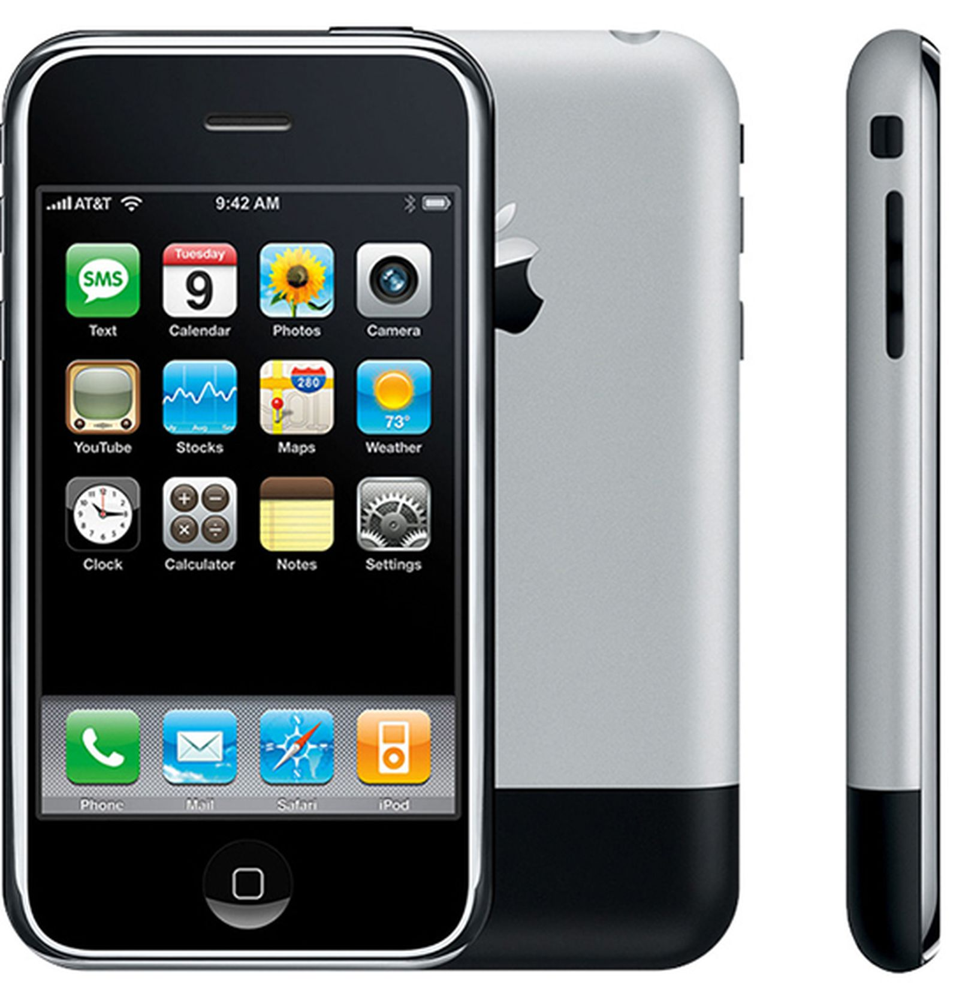

STEVE JOBS BIOGRAPHY
STEVE JOBS BIOGRAPHY Steve Jobs |
|
| Born | Steven Paul Jobs Febuary 24, 1955 San Francisco, California, U.S |
| Died | October 5, 2011 (aged 56) |
| Cause of death | Neuroendocrine cancer |
| Resting place | Alta Mesa Memorial Park |
| Occupation |
|
| Years active | 1976–2011 |
| Known for |
|
| Title | |
| Board member of |
|
| Spouse(s) | Laurene Powell (m. 1991) |
| Partner(s) | Chrisann Brennan (1972–1977) |
| Children | 4, including Lisa Brennan-Jobs |
| Relatives | Mona Simpson (sister) |
Signature

|
|
Steven Paul Jobs (February 24, 1955 – October 5, 2011) was an American business magnate, industrial designer, investor, and media proprietor. He was the chairman, chief executive officer (CEO), and co-founder of Apple Inc.; the chairman and majority shareholder of Pixar; a member of The Walt Disney Company's board of directors following its acquisition of Pixar; and the founder, chairman, and CEO of NeXT. Jobs is widely recognized as a pioneer of the personal computer revolution of the 1970s and 1980s, along with his early business partner and fellow Apple co-founder Steve Wozniak.
Jobs was born in San Francisco, California, and put up for adoption. He was raised in the San Francisco Bay Area. He attended Reed College in 1972 before dropping out that same year, and traveled through India in 1974 seeking enlightenment and studying Zen Buddhism.
Jobs and Wozniak co-founded Apple in 1976 to sell Wozniak's Apple I personal computer. Together the duo gained fame and wealth a year later with the Apple II, one of the first highly successful mass-produced microcomputers. Jobs saw the commercial potential of the Xerox Alto in 1979, which was mouse-driven and had a graphical user interface (GUI). This led to the development of the unsuccessful Apple Lisa in 1983, followed by the breakthrough Macintosh in 1984, the first mass-produced computer with a GUI. The Macintosh introduced the desktop publishing industry in 1985 with the addition of the Apple LaserWriter, the first laser printer to feature vector graphics. Jobs was forced out of Apple in 1985 after a long power struggle with the company's board and its then-CEO John Sculley. That same year, Jobs took a few of Apple members with him to found NeXT, a computer platform development company that specialized in computers for higher-education and business markets. In addition, he helped to develop the visual effects industry when he funded the computer graphics division of George Lucas's Lucasfilm in 1986. The new company was Pixar, which produced the first 3D computer animated feature film Toy Story (1995), and went on to become a major animation studio, producing over 20 films since then.
Jobs became CEO of Apple in 1997, following his company's acquisition of NeXT. He was largely responsible for helping revive Apple, which had been on the verge of bankruptcy. He worked closely with designer Jony Ive to develop a line of products that had larger cultural ramifications, beginning in 1997 with the "Think different" advertising campaign and leading to the iMac, iTunes, iTunes Store, Apple Store, iPod, iPhone, App Store, and the iPad. In 2001, the original Mac OS was replaced with the completely new Mac OS X (now known as macOS), based on NeXT's NeXTSTEP platform, giving the OS a modern Unix-based foundation for the first time. Jobs was diagnosed with a pancreatic neuroendocrine tumor in 2003. He died of respiratory arrest related to the tumor at age 56 on October 5, 2011.
By March 1976, Wozniak completed the basic design of the Apple I computer and showed it to Jobs, who suggested that they sell it; Wozniak was at first skeptical of the idea but later agreed. In April of that same year, Jobs, Wozniak, and administrative overseer Ronald Wayne founded Apple Computer Company (now called Apple Inc.) as a business partnership in Jobs's parents' Crist Drive home on April 1, 1976. The operation originally started in Jobs's bedroom and later moved to the garage.
In April 1977, Jobs and Wozniak introduced the Apple II at the West Coast Computer Faire. It is the first consumer product to have been sold by Apple Computer. Primarily designed by Wozniak, Jobs oversaw the development of its unusual case and Rod Holt developed the unique power supply. During the design stage, Jobs argued that the Apple II should have two expansion slots, while Wozniak wanted eight. After a heated argument, Wozniak threatened that Jobs should "go get himself another computer". They later decided to go with eight slots. The Apple II became one of the first highly successful mass-produced microcomputer products in the world.
Jobs was worth over $1 million in 1978, when he was just 23 years old. His net worth grew to over $250 million by the time he was 25, according to estimates. He was also one of the youngest "people ever to make the Forbes list of the nation's richest people—and one of only a handful to have done it themselves, without inherited wealth".
In 1983, Jobs lured John Sculley away from Pepsi-Cola to serve as Apple's CEO, asking, "Do you want to spend the rest of your life selling sugared water, or do you want a chance to change the world?"
Jobs began directing the development of the Macintosh in 1981, when he took over the project from early Apple employee Jef Raskin, who conceived the computer (Wozniak was on leave during this time due to an airplane crash earlier that year]) On January 22, 1984, Apple aired a Super Bowl television commercial titled "1984", which ended with the words: "On January 24th, Apple Computer will introduce Macintosh. And you'll see why 1984 won't be like 1984. However, the computer's slow processing speed and limited range of available software led to a rapid sales decline in the second half of 1984.
Sculley's and Jobs's respective visions for the company greatly differed. The former favored open architecture computers like the Apple II, sold to education, small business, and home markets less vulnerable to IBM. Jobs wanted the company to focus on the closed architecture Macintosh as a business alternative to the IBM PC. President and CEO Sculley had little control over chairman of the board Jobs's Macintosh division; it and the Apple II division operated like separate companies, duplicating services.
By early 1985, the Macintosh's failure to defeat the IBM PC became clear, and it strengthened Sculley's position in the company. In May 1985, Sculley—encouraged by Arthur Rock—decided to reorganize Apple, and proposed a plan to the board that would remove Jobs from the Macintosh group and put him in charge of "New Product Development". This move would effectively render Jobs powerless within Apple.
The Macintosh's struggle continued after Jobs left Apple.
Following his resignation from Apple in 1985, Jobs founded NeXT Inc. with $7 million. A year later he was running out of money, and he sought venture capital with no product on the horizon. Eventually, Jobs attracted the attention of billionaire Ross Perot, who invested heavily in the company. The NeXT computer was shown to the world in what was considered Jobs's comeback event, a lavish invitation-only gala launch event that was described as a multimedia extravaganza. The celebration was held at the Louise M. Davies Symphony Hall, San Francisco, California on Wednesday October 12, 1988. Steve Wozniak said in a 2013 interview that while Jobs was at NeXT he was "really getting his head together".
NeXT workstations were first released in 1990 and priced at US$9,999. Like the Apple Lisa, the NeXT workstation was technologically advanced and designed for the education sector, but was largely dismissed as cost-prohibitive for educational institutions. The NeXT workstation was known for its technical strengths, chief among them its object-oriented software development system. Jobs marketed NeXT products to the financial, scientific, and academic community, highlighting its innovative, experimental new technologies, such as the Mach kernel, the digital signal processor chip, and the built-in Ethernet port. Making use of a NeXT computer, English computer scientist Tim Berners-Lee invented the World Wide Web in 1990 at CERN in Switzerland.
The revised, second generation NeXTcube was released in 1990. Jobs touted it as the first "interpersonal" computer that would replace the personal computer. With its innovative NeXTMail multimedia email system, NeXTcube could share voice, image, graphics, and video in email for the first time. "Interpersonal computing is going to revolutionize human communications and groupwork", Jobs told reporters. Jobs ran NeXT with an obsession for aesthetic perfection, as evidenced by the development of and attention to NeXTcube's magnesium case. This put considerable strain on NeXT's hardware division, and in 1993, after having sold only 50,000 machines, NeXT transitioned fully to software development with the release of NeXTSTEP/Intel. The company reported its first yearly profit of $1.03 million in 1994. In 1996, NeXT Software, Inc. released WebObjects, a framework for Web application development. After NeXT was acquired by Apple Inc. in 1997, WebObjects was used to build and run the Apple Store, MobileMe services, and the iTunes Store.
In 1986, Jobs funded the spinout of The Graphics Group (later renamed Pixar) from Lucasfilm's computer graphics division for the price of $10 million, $5 million of which was given to the company as capital and $5 million of which was paid to Lucasfilm for technology rights.
The first film produced by Pixar with its Disney partnership, Toy Story (1995), with Jobs credited as executive producer, brought financial success and critical acclaim to the studio when it was released. Over the course of Jobs's life, under Pixar's creative chief John Lasseter, the company produced box-office hits A Bug's Life (1998); Toy Story 2 (1999); Monsters, Inc. (2001); Finding Nemo (2003); The Incredibles (2004); Cars (2006); Ratatouille (2007); WALL-E (2008); Up (2009); Toy Story 3 (2010); and Cars 2 (2011). Brave (2012), Pixar's first film to be produced since Jobs's death, honored him with a tribute for his contributions to the studio.Finding Nemo, The Incredibles, Ratatouille, WALL-E, Up, Toy Story 3 and Brave each received the Academy Award for Best Animated Feature, an award introduced in 2001.
In 2003 and 2004, as Pixar's contract with Disney was running out, Jobs and Disney chief executive Michael Eisner tried but failed to negotiate a new partnership, and in January 2004, Jobs announced that he would never deal with Disney again. Pixar would seek a new partner to distribute its films after its contract expired.
In October 2005, Bob Iger replaced Eisner at Disney, and Iger quickly worked to mend relations with Jobs and Pixar. On January 24, 2006, Jobs and Iger announced that Disney had agreed to purchase Pixar in an all-stock transaction worth $7.4 billion. When the deal closed, Jobs became The Walt Disney Company's largest single shareholder with approximately seven percent of the company's stock. Jobs's holdings in Disney far exceeded those of Eisner, who holds 1.7%, and of Disney family member Roy E. Disney, who until his 2009 death held about 1% of the company's stock and whose criticisms of Eisner—especially that he soured Disney's relationship with Pixar—accelerated Eisner's ousting. Upon completion of the merger, Jobs received 7% of Disney shares, and joined the board of directors as the largest individual shareholder. Upon Jobs's death his shares in Disney were transferred to the Steven P. Jobs Trust led by Laurene Jobs.
List of product
| Year | Product | Model | Description | Design |
|---|---|---|---|---|
| 1976 | Apple series | Apple I | Although entirely designed by Steve Wozniak, Jobs had the idea of selling the desktop computer, which led to the formation of Apple Computer in 1976. Both Jobs and Wozniak constructed several of the first Apple I prototypes by hand, and sold some of their belongings in order to do so. Eventually, 200 units were produced. |  |
| 1977 | Apple series | Apple II | The Apple II is an 8-bit home computer, one of the world's first highly successful mass-produced microcomputer products, designed primarily by Wozniak (though Jobs oversaw the development of the Apple II's unusual case[ and Rod Holt developed the unique power supply). It was introduced in 1977 at the West Coast Computer Faire by Jobs and Wozniak and was the first consumer product sold by Apple. |  |
| 1978 | Apple series | Apple Lisa | The Lisa is a personal computer designed by Apple during the early 1980s. It was the first personal computer to offer a graphical user interface in a machine aimed at individual business users. Development of the Lisa began in 1978. The Lisa sold poorly, with only 100,000 units sold. |  |
| 1984 | Macintosh | Original Macintosh | Once he joined the original Macintosh team, Jobs took over the project after Wozniak had experienced a traumatic airplane accident and temporarily left the company. Jobs introduced the Macintosh computer on January 24, 1984. This was the first mass-market personal computer featuring an integral graphical user interface and mouse. This first model was later renamed to "Macintosh 128k" for uniqueness amongst a populous family of subsequently updated models which are also based on Apple's same proprietary architecture. Since 1998, Apple has largely phased out the Macintosh name in favor of "Mac", though the product family has been nicknamed "Mac" or "the Mac" since the development of the first model. |  |
| 1988 | NeXT | NeXT Computer | After Jobs was forced out of Apple in 1985, he started NeXT, a workstation computer company. The NeXT Computer was introduced in 1988 at a lavish launch event. Using the NeXT Computer, Tim Berners-Lee created the world's first web browser, the WorldWideWeb. The NeXT Computer's operating system, named NeXTSTEP, begat Darwin, which is now the foundation of most of Apple's products such as Macintosh's macOS and iPhone's iOS. |  |
| 1998 | iMac series | iMac G3 | The iMac also featured forward-thinking changes, such as eschewing the floppy disk drive and moving exclusively to USB for connecting peripherals. This latter change resulted, through the iMac's success, in the interface being popularized among third-party peripheral makers—as evidenced by the fact that many early USB peripherals were made of translucent plastic (to match the iMac design). |  |
| 2001 | iTunes | iTunes 2.0 | iTunes is a media player, media library, online radio broadcaster, and mobile device management application developed by Apple. It is used to play, download, and organize digital audio and video (as well as other types of media available on the iTunes Store) on personal computers running the macOS and Microsoft Windows operating systems. The iTunes Store is also available on the iPod Touch, iPhone, and iPad. | |
| 2001 | iPod | 1st generation of iPod | The first generation of iPod was released October 23, 2001. The major innovation of the iPod was its small size achieved by using a 1.8" hard drive compared to the 2.5" drives common to players at that time. The capacity of the first generation iPod ranged from 5 GB to 10 GB. The iPod sold for US$399 and more than 100,000 iPods were sold before the end of 2001. | |
| 2005 | iPhone | iPhone 3G | Apple began work on the first iPhone in 2005 and the first iPhone was released on June 29, 2007. The iPhone created such a sensation that a survey indicated six out of ten Americans were aware of its release. Time declared it "Invention of the Year" for 2007 and included it in the All-TIME 100 Gadgets list in 2010, in the category of Communication The completed iPhone had multimedia capabilities and functioned as a quad-band touch screen smartphone. A year later, the iPhone 3G was released in July 2008 with three key features: support for GPS, 3G data and tri-band UMTS/HSDPA. |  |
| 2010 | iPad | 1st iPad | The iPad is an iOS-based line of tablet computers designed and marketed by Apple. The first iPad was released on April 3, 2010. The user interface is built around the device's multi-touch screen, including a virtual keyboard. The iPad includes built-in Wi-Fi and cellular connectivity on select models. As of April 2015, more than 250 million iPads have been sold. |  |